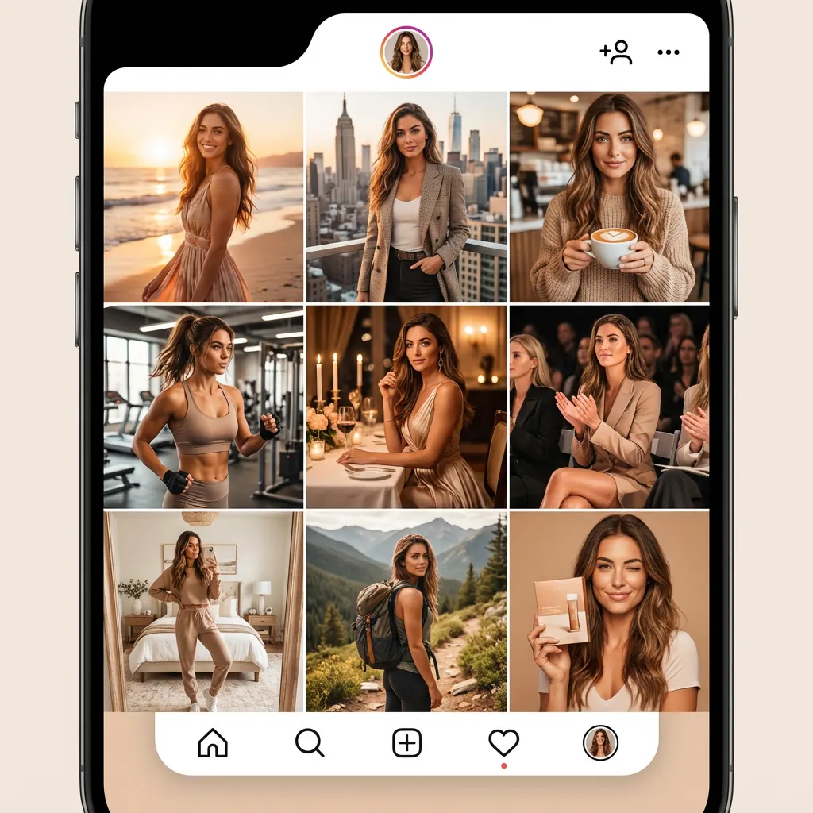

Disclosure: I'm an affiliate of MakeInfluencer.ai. If you subscribe through my links I earn a commission, at no extra cost to you. Example images and video on this page were generated with MakeInfluencer and are AI-generated.
Keep your AI character's face the same in every photo and video
If your AI influencer looks like a different person every few images, the fix is to build the character once and generate everything from that one identity, instead of re-prompting a face each time.


One AI character, three scenes. Examples generated with MakeInfluencer (AI-generated, fictional person).
Why the face drifts
Most image and video models generate every picture from scratch. Change the outfit, scene or angle and the model reinvents the face. Reference-image tricks help for a few shots, then break across video, new lighting or a different model.
The workflow that keeps it stable
- Design the character once. Pick the look, hair, body and style in a step-by-step builder, then name it.
- Generate from that identity. New outfits, places and formats reuse the same character instead of a new prompt.
- Turn photos into video. Image-to-video, talking clips with lip sync and motion control keep the same person moving and speaking.
- Train it for full control (Pro). A custom-trained character model gives the tightest consistency for daily posting.

A feed where every post is the same character. Example output (AI-generated).
Is it the right tool for you?
Good fit
- You're building an AI persona and will post several times a week
- You need photos and video of the same character in one place
- You want full commercial rights and no watermarks
Drawbacks: not a fit if
- You need one image, once (a cheaper tool will do)
- You want adult content (it's not allowed)
- You want to copy a real person's face
Plans
| Plan | Price | Pick it if |
|---|---|---|
| Creator | $39/mo $31/mo billed yearly | You want to try the character builder, images and 720p video first. |
| Pro | $89/mo $71/mo billed yearly | You'll post every week: trained custom character, 1080p/4K video, talking videos, Movie Maker. |
| Studio | $199/mo $166/mo billed yearly | Agencies running several clients or heavy API use. |
Prices from makeinfluencer.ai/pricing on 4 Oct 2026; check the live page. Plans run on monthly credits. Cancel anytime from your dashboard. Yearly billing makes sense only once you know you'll keep a weekly posting routine.
Your first week
- Day 1: build the character and save it.
- Days 2–3: make 10 photos in 3–4 recurring settings that fit your niche.
- Days 4–5: turn the best 2 into short videos; add one talking clip.
- Days 6–7: plan the next 2 weeks of posts so the character shows up on a schedule.
Questions
Do I need to train a LoRA?
No. The builder keeps a consistent character without training. Custom training is available on Pro if you want maximum control.
Can it make video, not just images?
Yes: image-to-video, talking videos with lip sync, motion control and short films, using models such as Seedance, Kling and Veo in one dashboard.
Do I own what I make?
MakeInfluencer states you own everything you create, with no watermarks. Read their terms for details.
Is running an AI influencer allowed on Instagram and TikTok?
Fictional AI personas are allowed when labelled as AI where the platform requires it. Impersonating real people is not.
What if it isn't for me?
Cancel anytime from your billing settings with no fees; your plan runs to the end of the period. Within 30 days of a payment, MakeInfluencer refunds credits you haven't used (per their refund policy, 29 May 2026).